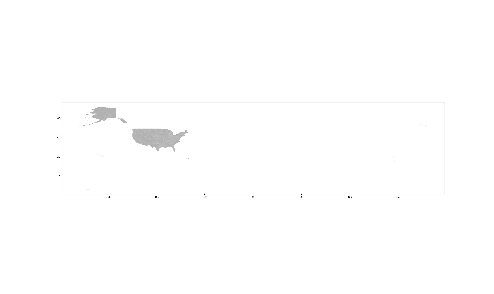

GIS is a broad topic with much to cover rendering the task of writing a single, comprehensive article on the subject impossible. Instead, the goal of this example is to instruct the reader on the specific parts of GIS which were used in our research - specifically mapping points onto maps using latitude and longitude.
Our specific example comes from our investigation into the frequency of violations of EPA statutes at the individual facility level, and seeing if facilities tend to have more or less violations based on their geographical location. The dataset was obtained from the EPA, and information on collecting the data from the website can be found in our other tutorial on web scraping, and we measure the number of violations using the number of quarters with violations in the last three years, meaning that each facility will be assigned an integer value in a range of 1 to 12. The results are pictured here for reference.

We will then also discuss our analysis at the county level which involved aggregating the data for each county from the data at the individual facility level. From this kind of data, there are many kinds of maps that can be obtained, for example one could find the average number of quarters with violations per facility per county, or just the total number of quarters with violations in each county - we will discuss more in detail, but here to give you an idea of the kind of maps we're talking about, is the map for violations per facility per county, that is to say that each color represents the average number of quarters with violations the facilities have in that county.

Before beginning, there are a few basic things that one needs to obtain. The first is a map one which one wishes to plot their data. We used the county map from this site - we chose county for the second part of this tutorial in which we will plot our data at the county level. If one wishes to plot other types of maps, such as maps where data is at the state level, there are many other options. Once downloaded and unzipped, one will be presented with a host of files, which will look like this.

Depending on where the file comes from, there may be more or less files than this, but the one we are interested for the purposes of this tutorial is the shape file, in this case called tl_2018_us_county.shp, which we know is the one we want because it is a .shp type.
The second thing we'll need is our data which has the appropriate spatial information. That is to say that if one is to plot data at the state level, one's data must necessarily and axiomatically have information for each data point pertaining to states. In our case, as we will first be plotting data on at the level of individual facility, we will need the latitude and longitude of each data point. We will also need information about the county in which each facility is located. In this tutorial, we store all this data in csv format.
With these two things we're now reading to begin making maps.
When discussing mapping at the individual facility, it is important to remember that the process reviewed in this part of the tutorial can be extended, by extrapolation, to any form of data which we wish to map at the level of individual points.
The first step is make sure that in our python code we import a couple libraries: matplotlib.pyplot, geopandas, pandas, and from shapely.geometry, Point. [See the end of this tutorial for a screenshot of the completed code]. Note that some of these packages can be tricky to install, especially on pc. In order to mitigate these challenges, as well as to render the installation of packages in python easier in general, especially those that pertain to data science, we reccommend running python in an Anaconda environment which allows one to install packages in the command line using the simply command conda install *package name*.
The first thing to do is have geopandas read in the shape file. This is done using the command geopandas.read_file('*file_name*'), so in our example it looks like counties_map = gpd.read_file('tl_2018_us_county.shp'), where gdp is a common shorthand for geopandas. We save it in a variable called counties_map so that it can be used and printed later. We can test that we were succesful with the following code:

This should then print the result pictured below:
This means you've done everything right thus far. Note that in the above code, where we say color='grey', we may put any color we'd like.
The next step is to read the data we wish to plot into a pandas data frame which is a very convenient data structure provided by the pandas library and used by many other libraries for data science, in this case geopandas. We do this with the line df = pd.read_csv("*file_name*") where *file_name* is the name of the csv file which stores our data.
Now that our data is in this data frame, we can begin to use it. The first thing to do is to create a list of points, which can be done using shapely.geometry.point which allows us to make point objects which can later be easily graphed. The line of code that one should write is complicated, so first I will show the line we will use in our specific example and then explain some of the details so it can be extrapolated to more general contexts:
geometry = [Point(xy) for xy in zip ( df["CenterLongitude"], df["CenterLatitude"])]
In the above code, we see that we are creating a list named geometry which contains a series of point objects. Each individual point object is called xy where xy is a zip of a tuple of the form (longitude, latitude). The reason we use df["CenterLongitude"] comes from the fact that each facility's longitude is stored in the column of the csv called "CenterLongitude" and when we read the csv into the pandas data frame, it called that column by this name. Note that the way to ensure that a column is called by a name such as this, the first row of the csv file must be a header where above each column there is a corresponding name. That is to say that the pandas.read_csv() function automatically takes the first row to be a row of column headers.
With the above code we now have created a list of point objects. However, before we can map it we will need to make a GeoDataFrame. Doing this, however, requires some attention as we need to ensure that we use the right coordinate reference system when making it. Figuring this out can be tricky because there are many different types and we must be sure to pick the same one that our shape file uses. That is to say, it is important to ensure that the points we are plotting are in the same coordinate reference system as the map onto which we are plotting them. Otherwise the points will not be in the place they are supposed to be. More information on this can be found here. In our case, however, we know that our CRS is NAD83 by using the line print(counties_map.crs) which prints the result {'init': 'epsg:4269'}. This line of code will work in most cases.
With this information, we can easily create a geometric data frame using the line:
geo_df = gpd.GeoDataFrame(df, crs={'init': 'epsg:4269'}, geometry=geometry)
where, as you may recall, geometry is the name of our list of points and df is our other data frame.
The task now becomes a simple matter of plotting our Geometric data frame on top of the map we already plotted. This can be done using the code shown at the end of this tutorial. The method is simple and, though apropos, not discussed here. The details of plotting things in matplotlib are far too diverse and copious to be treated even close to fully here. However, one can note that if one wishes to replace the colored points (which are colored based on the column 'QrtsWithVio' in the GeoDataFrame, meaning that higher values correspond to different colors dictated by the cmap or color map) with solid colored points just to see the locations of different facilities, one need only have the line
geo_df.plot(ax=ax, markersize=.1, color='grey')
Note one final pequiliarity of our mapping, which is the xlim and the ylim. These are specific to this example and are found by observing that between the part of the map containing the continental united states is found between this xlim and ylim (meaning x limit and y limit). This can be found only through trial and error.

Our finished product is now shown a second time:
We now move to the second part of our tutorial, which will explain how to plot data at the county level. For this tutorial, we will assume that we have already aggregated our original data (the same dataset used in the previous problem) into a dataset of county level data. That is to say that we have some kind of matrix with two columns in which the first column is the county and the second column is the data we want to plot in integer format. We will still show the code we used to produce such a matrix at the end of the tutorial, though this code will only be briefly explained at the end.
We begin by reading in our shape file, which is the exact same as the one used in the previous example, meaning that this process is the same as in the previous part of the tutorial, except that this time we name the variable which holds our shape file counties. This can be tested as it was in the previous part of the tutorial.
Our task is now relatively simple - we will need to create a new column in the shape file which will represent the data we want to plot - in this example, the average number of violations per county (as discussed at the beginning of the article). This will then allow us to easily color code each county when we print it. In order to do this, we need to figure out how the shape file we used keeps track of each county. We begin by printing the shape file's head, which is done with the line print(counties.head()). This then presents the result in our shell:

We see that the shape file uses a couple ways of identifying counties, such as the name and the GEOID. However, we will take advantage of the STATEFP and COUNTYFP which are the fips values for the states and the counties. Each county has its own unique fips code within a state represented by the 3 digit fips code; each state has its own 2 digit fips code. Together, these two make a unique fips code for each county which is the concatonation of the state and the county fips value. Thus, in the data printed above, the first row would have a fips value of 31039. We choose the fips codes because the data set we are using has a column with these exact fips codes. We also have a column with the names of counties which is present in this shape file also. However, there is too high of a chance of variation among what counties are called for this to be a reliable way to do what we need to do.
Thus, we need simply to go through each row of the shape file, find the fips value that represents that column, and add the average number of violations on to the end of the column. However, this is done in practice a little differently than this theoretical explanation. What we do in practice is make the two columns, STATEFP and COUNTYFP into python lists using the following code:

We then create a new list called violations_column and iterate through the statefips or the countyfips (both are the same length) and concatenate the values of the two columns to get the unique county fips code and match it to the average number of violations found in our original dataset. We present a screenshot of our code below, which will be followed by an exanation of some of its particulars.

In order to understand the above code, one must note that fips_to_violations is a dictionary in which the keys are the unique county fips codes and each points to the total number of quarters of violations (meaning that if there are two facilities in a county, each with 5 violations, this value would read 10) and fips_to_facility_count is the number of facilities in each county. This is thus a way to find the average we are looking for.
Our last step is to simply plot it as we did in the previous example. This code will look similar in many respects to the code in the previous part of the tutorial.

This then produces the following map, already shown in the beginning:
The complete code for this second example is now pictured below for those curious.

Thank you for reading!